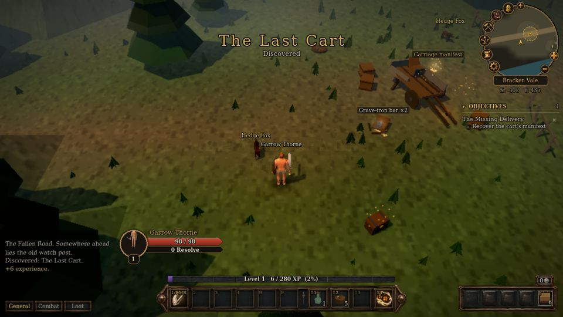

The site is up
Shadowfall has a home page. The game itself now lives at /play, and every change to the game goes live here within a few minutes.

A blacksmith named Mara Venn will pay for word of a missing iron delivery. That is reason enough.
Shadowfall is a free, retro dark fantasy RPG that runs in your browser. You start as a nobody on a muddy road at the edge of the Blackwood, and nobody treats you like a hero. Take odd jobs, settle local feuds, learn a trade, and find out why the dead in the old barrows no longer rest.
Shadowfall has a home page. The game itself now lives at /play, and every change to the game goes live here within a few minutes.
Rest at the Ford Inn to heal your wounds and earn rested experience. Attacks can now miss foes above your level, and you play as a fully animated human.
The early world is more dangerous: foes hit harder, bags are small, and death leaves a grave you must walk back to. Enchanting arrives with Sabeth Gall in Brackenford.